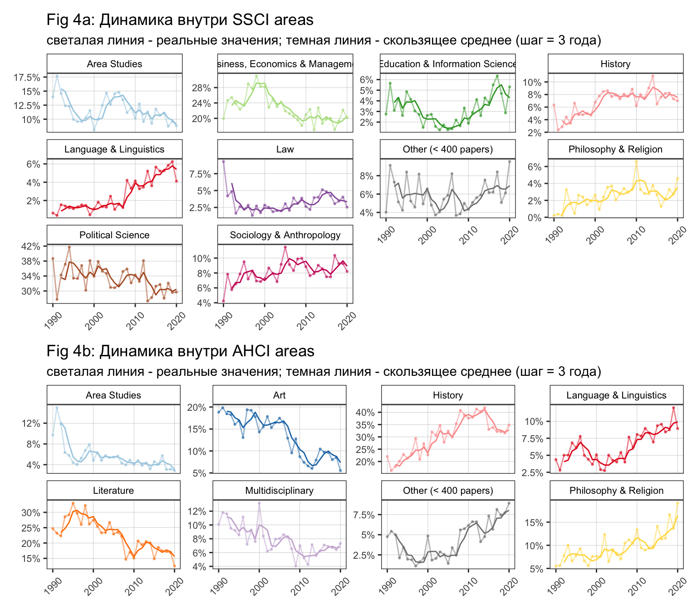
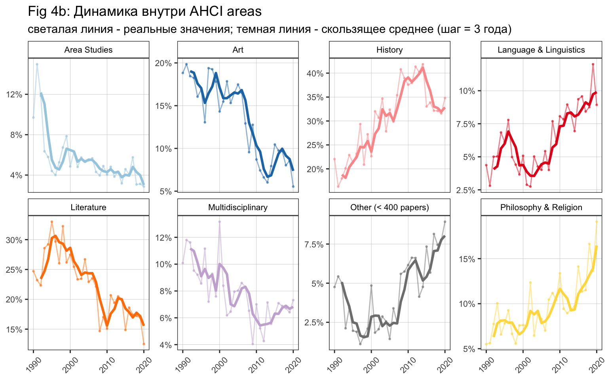

I. PRODUCTION OF PUBLICATIONS
В документе всё построено на full_data_precise_original. Произведена чистка стран, институций по доку ТЗ Катерины. Со странами проблем нет, Инстритуции всё еще не унифицированы полностью.
Произведено вменение институциям единственной страны (через присвоение моды). Произведено вменение стране единственного региона (через присвоение моды).
Если исследовательская область выглядит как список, например, Political Science; Area Studies, тогда публикация дублируется и считается как +1 публикация для каждой из областей в списке.
Если исследовательская область выглядит как список, [‘SSCI’, ‘AHCI’], тогда публикация дублируется и считается как +1 публикация для каждой из областей в списке.
Фракционализация с разбиением публикации на доли проводилась только для институтский в разделе I, пункте (7) (показаны таблицы и с фракционализацией и без).
1. Динамика и прирост
На Fig 1 видно, что публикации в [‘SSCI’] на протяжение 1990-2007 годов варьировались в диапазоне до ~400 публикаций в год. После 2008 года рубеж в 400 публикаций стабильно преодолен и количество публикаций в год нарастало вплоть до ~600 в 2020.

2. Динамика по областям
Все области
Из Fig 2 хорошо видно структуру Рашн стадис. Видно, что по политологии, экономики, истории и литературе написан основной массив всех текстов за 1990-2020. Но динамика считывается тут плохо, посмотрим на Fig 3, из которого видно, что История сильно приросла в процентах от всех областей. Так же доля социологии, лингвистики и философии приросли. Доли Арт и литературы снизились. Очень стабильную долю на за 1990-2020 держит только политология (в районе 20%). На самом деле еще экономика, кроме всплеска доли в конце 90-х (может интерес вызван исследованиям кризиса 1998)
SSCI и AHCI
Динамика перерисована дальше в (2с), нагляднее. Столбики с числом статей с раскраской по областям малоинформативны в сцепке с графиком долей, лучше убрать раскраску и оставлять серыми.
distinct(UT) split field split research_areas
Это то же самое что доли из (2b), просто наглядно в динамике. Из графиков ниже мы видим, что в SSCI основное это политология и экономика, доли ведут себя очень стабильно, кроме всплеска доли экономики в конце 90%. В AHCI видна смена подобластей - доля Арт и литературы со временем снижается, доля истории и философии наоборот растет. В комбо SSCI + AHCI снижается Area Stud.
distinct(UT) split field split research_areas


3. Регионы
Other это Africa, Americas, Oceania.
Основной массив текстов раньше писался в США (рис А). Но доля США стабильно падала, доля России и Европы и Азии растет (рис С). Для США падает не потому что они стали писать меньше статей, они пишут столько же (рис. В). Это просто Россия и Европа в штуках стали больше писать.
distinct(UT)
4. Специализация регионов
На рис А в глаза бросается относительная большая специализация России на Философии? (это ЛОГОС???))))) социологии, а так же относительно большая специализация США на литературе. У России в структуре относительно мало Истории, а у США экономики.
На рис В мало что видно, он перерисован и на рис С уже динамика представлена отдельными линиями. Благодаря рис С видим, что скачек доли экономических статей это в основном российский регион. Видим странный скачек Арт публикаций в России в 2005-2006. Видим планомерный рост доли истории у США. Видим странный горб по философии в 2001-2007 в России. Ну и обвал доли публикаций по политологии в России начиная с 2013. Все остальные доли в России, США и Европе кажутся относительно стабильными.
distinct(UT) split research_areas dror region NA
distinct(UT) split research_areas drop na & other region
5. Вклад региона в область
Россия из всех дисциплин серьезный вклад вносит в образование, философию, социологию и урбан (мало наблюдений) - авторы из России участвовали в написании от четверти и более всех публикаций в этих областях.
distinct(UT) split research_areas
6. Страны и число организаций
Важно: Надо сначала унифицировать страны, может сильно поменяться
7. Вклад стран и организаций
Важно: Надо сначала унифицировать страны, может сильно поменяться
Примечание: Из 33937 строк у ~8100 нет институции и у ~4200 нет страны